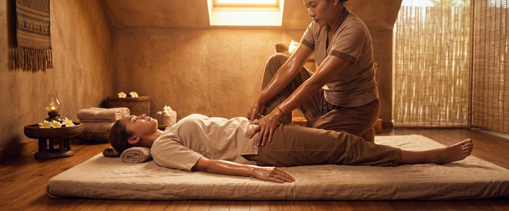
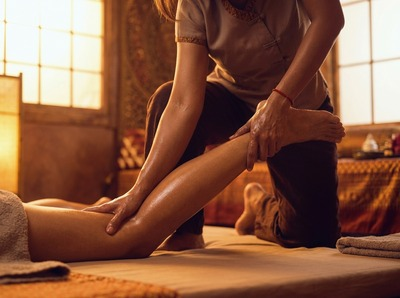
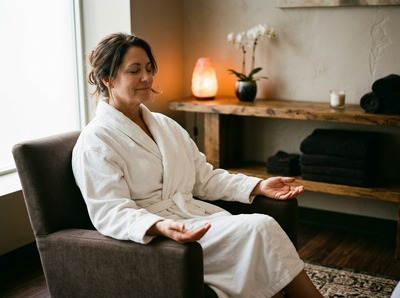

If you have ever wished someone else could do your yoga for you, Thai massage is exactly that.

Often called "assisted yoga" or "lazy person's yoga," Thai yoga massage is a traditional bodywork practice. A trained therapist guides your body through stretches, assisted poses, and acupressure sequences while you lie fully clothed on a mat and simply breathe. For most people, the results are remarkable: looser joints, longer muscles, a quieter mind, and a full-body release that a standard massage table session rarely delivers.
Most stretching you do on your own is active. Your muscles contract to pull your body into position, which means the same muscles you are trying to lengthen are also doing the work. In Thai yoga massage, the therapist does the moving for you.

Your muscles stay completely passive, which allows them to let go far more deeply than they would in a solo stretch. That shift alone changes everything about how the work feels.
The technique is also rhythmic and sequential. A skilled practitioner works along the body's sen energy lines — a system of internal pathways mapped in traditional Thai medicine. Palm and thumb pressure softens the tissue first, then the stretch follows. That order is what separates Thai yoga massage from simply being pushed around.
One of the most requested techniques is the supine spinal twist, performed while you lie on your back. The therapist draws one knee across the body, anchors the shoulder gently to the mat, and holds the position as the spine decompresses. For anyone dealing with lower back pain from long hours at a desk, this single technique can bring more relief than days of self-managed stretching.
The therapist may also work traction along the lumbar spine, using their own bodyweight to create a gentle lengthening pull through the lower back while your hips are supported. This counteracts the constant compression gravity places on the spine throughout the day. It creates space between the vertebrae that is hard to achieve any other way.
Tight hip flexors are one of the most common complaints among office workers, drivers, and anyone who sits for long periods. In Thai yoga massage, the therapist uses a lunge-style assisted stretch that draws the hip into extension while keeping the pelvis stable. This targets the iliopsoas — the deep hip flexor group that, when tight, tilts the pelvis forward and contributes to lower back strain and poor posture.
Combined with work on the quadriceps and IT band using elbow and forearm pressure along the sen lines of the leg, this sequence can restore movement that clients often describe as "not feeling that free since I was a teenager." If you want to experience what this feels like, you can book a session online at Glasgow Thai Massage to try it yourself.
Rounded shoulders and a tight chest are the postural hallmarks of modern life. Thai yoga massage addresses this with several assisted chest-opening techniques, including a gentle cobra-style stretch where the therapist supports the upper back and guides the shoulders down and back. The movement targets the chest muscles, the front of the shoulders, and the muscles along the front of the neck — all overworked by forward head posture.
A therapist trained in traditional Thai massage will work into the shoulder blades and upper back with palm pressure before any chest opening begins. This warms and softens the tissue first. Skipping that step is one reason self-stretching often feels uncomfortable rather than relieving.
The most striking technique in the Thai yoga massage repertoire is sometimes called the "flying" position. The therapist uses their feet to support the client's lower back or hips, then draws the arms back to create a full stretch from hip to fingertip. When performed by an experienced practitioner, the release through the spine and the opening through the entire front of the body produces a feeling of lightness that is genuinely unlike anything else.
At Glasgow Thai Massage, Maliwan and Jariya are both trained in these traditional techniques and bring over two decades of hands-on experience to every session. This is not a set of moves learned from a weekend course. It is a practice with deep roots in the Wat Pho tradition, and that lineage makes a real difference in how the work lands in the body.

For anyone working through postural issues, long-term tightness, or sports recovery, a session every two to three weeks builds on each treatment and brings steady progress. For general upkeep and stress relief, once a month is a solid base.
The cumulative effect is real: tissues that are regularly stretched and worked along the sen lines develop better baseline flexibility and recover faster from physical demand. You can check current availability and book your appointment at Glasgow Thai Massage directly online.
Thai yoga massage stretching is not a passive luxury. It is a targeted, structured practice that improves how your body moves, feels, and recovers. Whether you are dealing with specific tension patterns or simply want to move better and feel more at ease, these techniques offer something that foam rolling and static stretching alone cannot replicate.
Both are rooted in the same traditional practice. Thai yoga massage places particular emphasis on assisted stretching and passive yoga-style postures. Regular Thai massage descriptions sometimes focus more on acupressure and sen line work. In practice, most traditional Thai massage sessions at a reputable studio include both elements. The terms are often used interchangeably.
Not at all. The whole point of assisted stretching is that the therapist works within your current range of motion. They never push the body beyond a comfortable limit. Clients with very limited flexibility often benefit most, as the therapist can safely extend range of motion in ways that are hard to achieve alone. You arrive as you are and leave with more movement than you came in with.
Comfortable, loose clothing that allows easy movement is ideal. Joggers, leggings, or loose trousers and a t-shirt all work well. Thai massage is performed fully clothed, so there is no need for a robe or to undress. Avoid tight jeans or restrictive fabrics, as these will limit the range of stretching the therapist can assist you with.
Yes, and it is one of the most common reasons clients book. Spinal traction, lumbar rotation stretches, and hip flexor release all target the muscle imbalances and joint compression that cause lower back pain. Many clients notice clear relief after a single session. For long-term or recurring back pain, a course of regular treatments tends to bring the most lasting results.
It depends on the nature and stage of the injury. For acute injuries, massage and stretching should wait until the initial inflammation has settled — typically two to four days after the event. Once past that stage, Thai sports massage and assisted stretching can support healing, restore range of motion, and ease the compensatory tension that builds around an injury site. If you are unsure, speak to your therapist before booking so they can advise on the right approach for your situation.